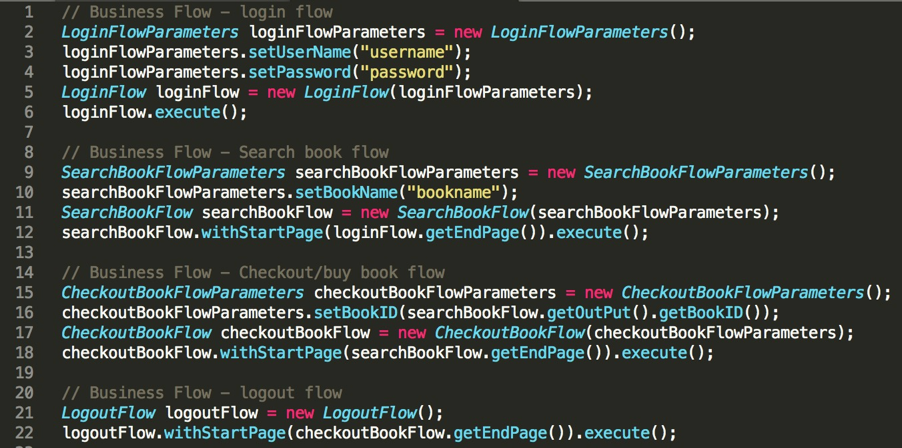

- 00 开篇词 从“小工”到“专家”，我的软件测试修炼之道.md.html
- 01 你真的懂测试吗？从“用户登录”测试谈起.md.html
- 02 如何设计一个“好的”测试用例？.md.html
- 03 什么是单元测试？如何做好单元测试？.md.html
- 04 为什么要做自动化测试？什么样的项目适合做自动化测试？.md.html
- 05 你知道软件开发各阶段都有哪些自动化测试技术吗？.md.html
- 06 你真的懂测试覆盖率吗？.md.html
- 07 如何高效填写软件缺陷报告？.md.html
- 08 以终为始，如何才能做好测试计划？.md.html
- 09 软件测试工程师的核心竞争力是什么？.md.html
- 10 软件测试工程师需要掌握的非测试知识有哪些？.md.html
- 11 互联网产品的测试策略应该如何设计？.md.html
- 12 从0到1：你的第一个GUI自动化测试.md.html
- 13 效率为王：脚本与数据的解耦 + Page Object模型.md.html
- 14 更接近业务的抽象：让自动化测试脚本更好地描述业务.md.html
- 15 过不了的坎：聊聊GUI自动化过程中的测试数据.md.html
- 16 脑洞大开：GUI测试还能这么玩（Page Code Gen + Data Gen + Headless）？.md.html
- 17 精益求精：聊聊提高GUI测试稳定性的关键技术.md.html
- 18 眼前一亮：带你玩转GUI自动化的测试报告.md.html
- 19 真实的战场：如何在大型项目中设计GUI自动化测试策略.md.html
- 20 与时俱进：浅谈移动应用测试方法与思路.md.html
- 21 移动测试神器：带你玩转Appium.md.html
- 22 从0到1：API测试怎么做？常用API测试工具简介.md.html
- 23 知其然知其所以然：聊聊API自动化测试框架的前世今生.md.html
- 24 紧跟时代步伐：微服务模式下API测试要怎么做？.md.html
- 25 不破不立：掌握代码级测试的基本理念与方法.md.html
- 26 深入浅出之静态测试方法.md.html
- 27 深入浅出之动态测试方法.md.html
- 28 带你一起解读不同视角的软件性能与性能指标.md.html
- 29 聊聊性能测试的基本方法与应用领域.md.html
- 30 工欲善其事必先利其器：后端性能测试工具原理与行业常用工具简介.md.html
- 31 工欲善其事必先利其器：前端性能测试工具原理与行业常用工具简介.md.html
- 32 无实例无真相：基于LoadRunner实现企业级服务器端性能测试的实践（上）.md.html
- 33 无实例无真相：基于LoadRunner实现企业级服务器端性能测试的实践（下）.md.html
- 34 站在巨人的肩膀：企业级实际性能测试案例与经验分享.md.html
- 35 如何准备测试数据？.md.html
- 36 浅谈测试数据的痛点.md.html
- 37 测试数据的“银弹”- 统一测试数据平台（上）.md.html
- 38 测试数据的“银弹”- 统一测试数据平台（下）.md.html
- 39 从小作坊到工厂：什么是Selenium Grid？如何搭建Selenium Grid？.md.html
- 40 从小工到专家：聊聊测试执行环境的架构设计（上）.md.html
- 41 从小工到专家：聊聊测试执行环境的架构设计（下）.md.html
- 42 实战：大型全球化电商的测试基础架构设计.md.html
- 43 发挥人的潜能：探索式测试.md.html
- 44 测试先行：测试驱动开发(TDD).md.html
- 45 打蛇打七寸：精准测试.md.html
- 46 安全第一：渗透测试.md.html
- 47 用机器设计测试用例：基于模型的测试.md.html
- 48 优秀的测试工程师为什么要懂大型网站的架构设计？.md.html
- 49 深入浅出网站高性能架构设计.md.html
- 50 深入浅出网站高可用架构设计.md.html
- 51 深入浅出网站伸缩性架构设计.md.html
- 52 深入浅出网站可扩展性架构设计.md.html
- 测试专栏特别放送 浅谈全链路压测.md.html
- 测试专栏特别放送 答疑解惑第一期.md.html
- 测试专栏特别放送 答疑解惑第七期.md.html
- 测试专栏特别放送 答疑解惑第三期.md.html
- 测试专栏特别放送 答疑解惑第二期.md.html
- 测试专栏特别放送 答疑解惑第五期.md.html
- 测试专栏特别放送 答疑解惑第六期.md.html
- 测试专栏特别放送 答疑解惑第四期.md.html
- 结束语 不是结束，而是开始.md.html
- 捐赠
14 更接近业务的抽象：让自动化测试脚本更好地描述业务
在上一篇文章中，我介绍了GUI自动化测试中的两个主要的概念“脚本与数据的解耦 ”以及“ 页面对象模型”。在引入“操作函数”封装时，我提到操作函数在改善测试脚本可读性问题的同时，也引入了两个新的问题，即： 如何把控操作函数的粒度，以及如何衔接两个操作函数之间的页面。
现在，我就以这两个问题作为引子，为你介绍GUI自动化测试中“业务流程（business flow）”的概念、核心思想以及应用场景。
如何把控操作函数的粒度？
操作函数的粒度是指，一个操作函数到底应该包含多少操作步骤才是最合适的。
- 如果粒度太大，就会降低操作函数的可重用性。极端的例子就是，前面文章中涉及的百度搜索的案例，把“登录”“搜索”“登出”的操作作为一个操作函数。
- 如果粒度太小，也就失去了操作函数封装的意义。极端的例子就是，把每一个步骤都作为一个操作函数。
- 更糟糕的是，在企业实际自动化测试开发中，每个测试工程师对操作函数的粒度理解也不完全相同，很有可能出现同一个项目中脚本粒度差异过大，以及某些操作函数的可重用性低的问题。
那么，操作函数的粒度到底应该如何控制呢？其实这个问题，在很大程度上取决于项目的实际情况，以及测试用例步骤的设计，并没有一个放之四海而皆准的绝对标准。
但是，脚本粒度的控制还是有设计依据可以遵循的，即往往以完成一个业务流程（business flow）为主线，抽象出其中的“高内聚低耦合”的操作步骤集合，操作函数就由这些操作步骤集合构成。
比如，对于“用户注册”这个业务流程，其中的“信用卡绑定”操作就会涉及多个操作步骤，而这些操作在逻辑上又是相对独立的，所以就可以包装成一个操作函数。也就是说，业务流程会依次调用各个操作函数，来完成具体的业务操作。
如何衔接两个操作函数之间的页面？
完成一个业务流程操作，往往会需要依次调用多个操作函数，但是操作函数和操作函数之间会有页面衔接的问题，即前序操作函数完成后的最后一个页面，必须是后续操作函数的第一个页面。
如果连续的两个操作函数之间无法用页面衔接，那就需要在两个操作函数之间加入额外的页面跳转代码，或者是在操作函数内部加入特定的页面跳转代码。
业务流程抽象
在解决如何把控操作函数的粒度，以及如何衔接两个操作函数之间的页面这两个问题的过程中，我引入了业务流程的概念。那么，接下来我就跟你详细说说什么是业务流程。
业务流程抽象是，基于操作函数的更接近于实际业务的更高层次的抽象方式。基于业务流程抽象实现的测试用例往往灵活性会非常好，你可以很方便地组装出各种测试用例。
这个概念有点拗口，难以理解。但是，没关系，我举个例子，你就豁然开朗了。
假设，某个具体的业务流程是：已注册的用户登录电商平台购买指定的书籍。那么，基于业务流程抽象的测试用例伪代码，如图1所示。

图1 基于业务流程抽象的测试用例伪代码
这段伪代码的信息量很大，但是理解了这段代码的设计思想，你也就掌握了业务流程抽象的精髓。
首先，从整体结构上看，段伪代码顺序调用了4个业务流程， 依次是完成用户登录的LoginFlow、完成书籍查询的SearchBookFlow、完成书籍购买的CheckoutBookFlow、完成用户登出的LogoutFlow。
这4个业务流程都是作为独立的类封装的，可以被很方便的重用并灵活组合，类的内部实现通常是调用操作函数。而操作函数内部，则是基于页面对象模型完成具体的页面控件操作。
然后，对于每一个业务流程类，都会有相应的业务流程输入参数类与之一一对应。具体的步骤通常有这么几步：
初始化一个业务流程输入参数类的实例；
给这个实例赋值；
用这个输入参数实例来初始化业务流程类的实例；
执行这个业务流程实例。
执行业务流程实例的过程，其实就是调用操作函数来完成具体的页面对象操作的过程。
为了让你更好地理解业务流程抽象提供了哪些功能，接下来我会为你逐行解读这段伪代码。
伪代码的第2-6行，调用的是LoginFlow，完成了用户登录的操作。
2: LoginFlowParameters loginFlowParameters = new LoginFlowParameters();
3: loginFlowParameters.setUserName("username");
4: loginFlowParameters.setPassword("password");
5: LoginFlow loginFlow = new LoginFlow(loginFlowParameters);
6: loginFlow.execute();
第2行，初始化了LoginFlow对应的LoginFlowParameters的实例。
第3-4行，通过setUserName和setPassword方法将用户名和密码传入该参数实例。
第5行，用这个已经赋值的参数实例来初始化LoginFlow。
第6行，通过execute方法发起执行。执行之后，LoginFlow会调用内部的操作函数，或者直接调用页面对象方法，完成用户登录的操作。
伪代码的第9-12行，用和2-6行类似的方式调用了SearchBookFlow，完成了书籍搜索的操作。
9: SearchBookFlowParameters searchBookFlowParameters = new SearchBookFlowParameters();
10: searchBookFlowParameters.setBookName("bookname");
11: SearchBookFlow searchBookFlow = new SearchBookFlow(searchBookFlowParameters);
12: searchBookFlow.withStartPage(loginFlow.getEndPage()).execute();
需要特别注意的是，第12行中withStartPage(loginFlow.getEndPage())的含义是，SearchBookFlow的起始页面将会使用之前loginFlow的结束页面。显然，通过这种方式可以很方便地完成两个业务流程之间的页面衔接。
同时，从中还可以看出，其实每个业务流程都可以接受不同的起始页面。以SearchBookFlow为例，它的起始页面既可以是书籍首页，也可以是其他页面，但是需要在它的内部对不同的初始页面做出相应的处理，以保证这个业务流程真正开始的页面是在书籍搜索页面。
同样，由于业务流程存在分支的可能性，每个业务流程执行完成的最终页面也不是唯一的，你可以使用getEndPage方法拿到这个业务流程执行结束后的最后页面。
通过这段代码的解读，你可以很清楚地理解，业务流程之间的页面衔接是如何实现的。
伪代码的第15-18行，调用了CheckoutBookFlow，完成了书籍购买操作。
15: CheckoutBookFlowParameters checkoutBookFlowParameters = new CheckoutBookFlowParameters();
16: checkoutBookFlowParameters.setBookID(searchBookFlow.getOutPut().getBookID());
17: CheckoutBookFlow checkoutBookFlow = new CheckoutBookFlow(checkoutBookFlowParameters);
18: checkoutBookFlow.withStartPage(searchBookFlow.getEndPage()).execute();
第15行，初始化了CheckoutBookFlow对应的checkoutBookFlowParameters的实例。
第16行，通过setBookID(searchBookFlow.getOutPut().getBookID())，将上一个业务流程searchBookFlow的输出参数，作为了当前业务流程的输入参数。这是典型的业务流程之间如何传递参数的示例，也是很多测试场景中都要用到的。
第17行，用checkoutBookFlowParameters参数实例来初始化checkoutBookFlow。
第18行，通过execute方法发起执行。这里需要注意的是，checkoutBookFlow的起始页面将会使用之前searchBookFlow的结束页面。开始执行后，checkoutBookFlow会调用内部的操作函数，或者直接调用页面对象方法，完成书籍的购买操作。
伪代码的第21-22行，调用LogoutFlow，完成了用户登出操作。
21: LogoutFlow logoutFlow = new LogoutFlow();
22: logoutFlow.withStartPage(checkoutBookFlow.getEndPage()).execute();
第21行，由于LogoutFlow不带参数，所以直接初始化了LogoutFlow。
第22行，通过execute方法发起执行。这里LogoutFlow的起始页面将会使用之前CheckoutBookFlow的结束页面。开始执行后，LogoutFlow会调用内部的操作函数，或者直接调用页面对象方法，完成用户登出操作。
通过对这些代码的解读，我解释了业务流程是什么，并从使用者的角度分析了它的主要特点。比如，如何实现不同业务流程间的页面衔接，如何在不同的业务流程间传递参数等。
为了加深印象，我再来总结一下业务流程的优点：
业务流程（Business Flow）的封装更接近实际业务；
基于业务流程的测试用例非常标准化，遵循“参数准备”、“实例化Flow”和“执行Flow”这三个大步骤，非常适用于测试代码的自动生成；
由于更接近实际业务，所以可以很方便地和BDD结合。BDD就是Behavior Driven Development，即行为驱动开发，你不了解的话，可以看看郑晔老师[这篇文章]。
总结
我以如何把控操作函数的粒度，和如何衔接两个操作函数之间的页面，这两个问题为引子，为你介绍了业务流程的概念、核心思想和适用的场景。
业务流程抽象是，基于操作函数的更接近于实际业务的更高层次的抽象方式。基于业务流程抽象实现的测试用例往往具有较好的灵活性，可以根据实际测试需求方便地组装出各种测试用例。
业务流程的核心思想是，从业务的维度来指导测试业务流程的封装。由于业务流程封装通常很贴近实际业务，所以特别适用于组装面向终端用户的端到端（E2E）的系统功能测试用例，尤其适用于业务功能非常多，并且存在各种组合的E2E测试场景。
思考题
你所在公司的GUI自动化测试是否已经运用了业务流程级别的封装？在使用过程中，你是否遇到什么瓶颈，是如何解决的？
欢迎你给我留言。
© 2019 - 2023 Liangliang Lee. Powered by gin and hexo-theme-book.